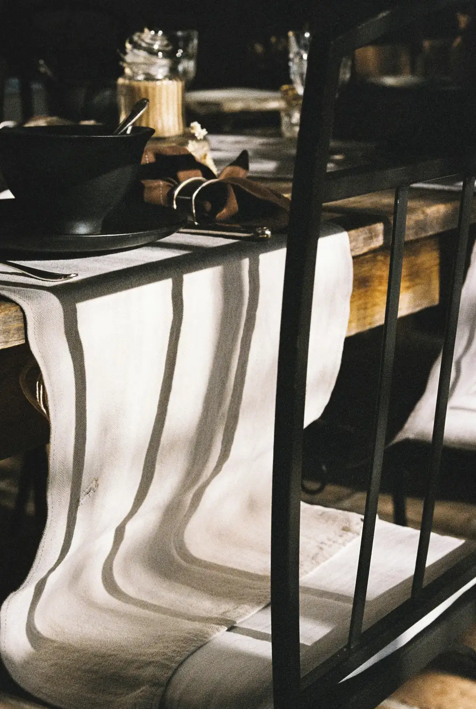
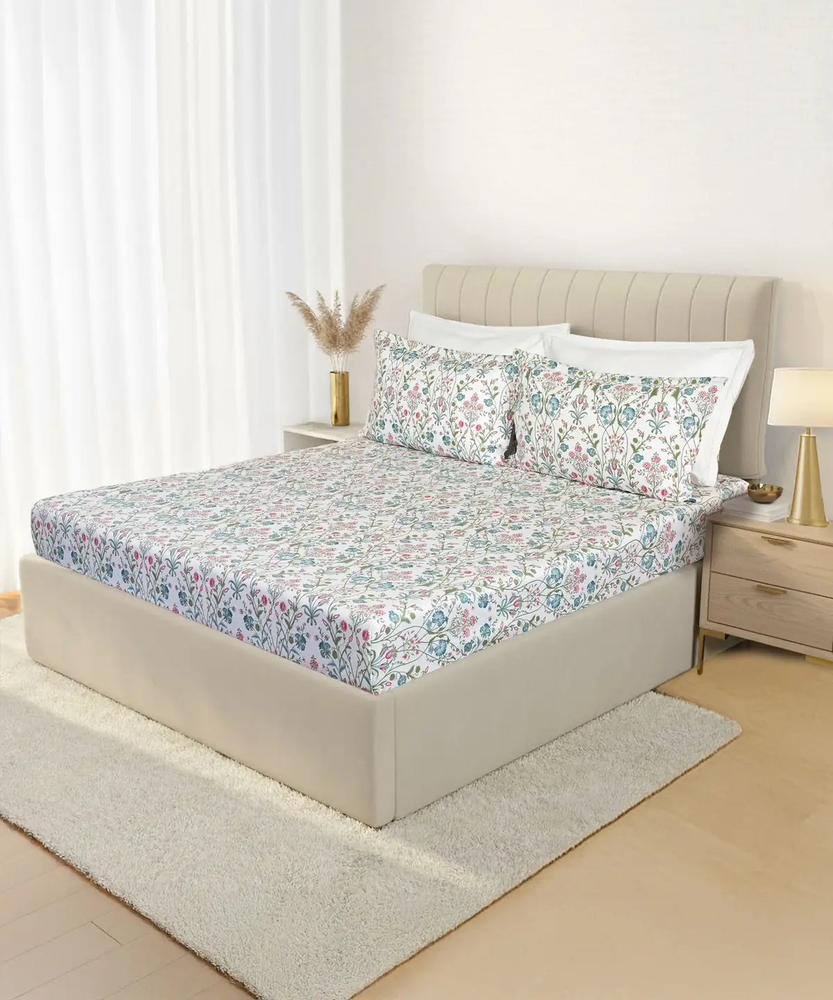
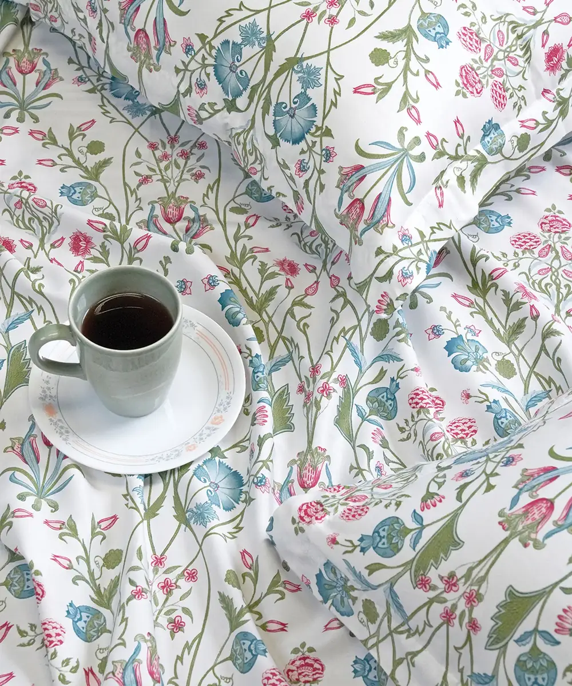
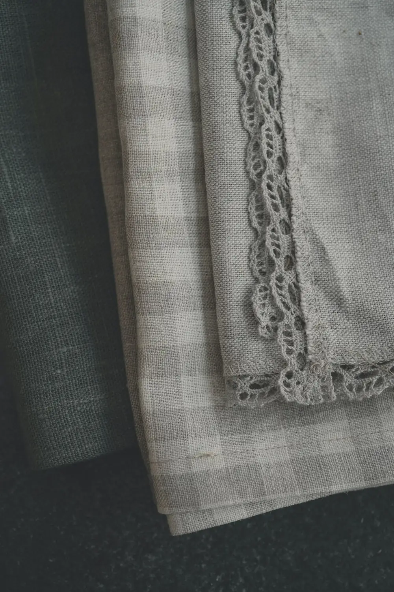

Collections · Bedding & table linen
Bedding and table linen in Hyderabad.
Ten degrees of comfort separate a good night from a bad one, and most of them live in the weave. Pure-cotton sateen and percale, quilts and dohars in winter weights, and table linen that turns supper into an occasion — woven for us, stitched by us.

Bedding
Cotton you can sleep ten years in.
Pure-cotton sateen and percale in 250 to 600 thread counts, quilts and dohars in winter weights, pillow forms we re-fill on request. We do not sell polyester sheets. We never have.
If your bed is an old size that no shop's standard set fits, bring the measurements — custom sizes are cut and stitched by our own tailors, the same team behind everything else on the floor. And if you are not sure which weave suits how you sleep, the consultation is free.
- Sateen — 300 to 600
- Percale & oxford
- Quilts & dohars
- Pillow forms — duck, microfibre
- Custom sizes for old beds
- Embroidered bridal sets

Table linen
Every meal, a small ceremony.
A runner turns supper into an occasion, and a set of napkins turns your dining table into someone else's memory. Jacquard, plain weave, runners, place-mats, napkins, tea-towels — woven for us, gift-wrapped at the counter without being asked, and as good a wedding present as any we know of.
- Jacquard runners
- Place-mats — cotton, jute
- Napkins — 12-piece sets
- Tea-towels & aprons
- Festive collections
- Complimentary gift wrap



Quilts & dohars
The layer that finishes the bed.
Quilts and dohars in winter weights, sized to the bed they will live on — and made to fit if the bed is not a standard size. The cutting and stitching is done in-house, so a custom size is a matter of a measurement, not a special order that takes a season.
Bedding sits on the bed you already own — if the mattress underneath has gone soft, that conversation is worth having too. Our mattress floor has eleven beds laid out to try, and the curtain range — blackouts especially — does as much for sleep as the sheeting does.

Price
What it costs.
TODO-CLIENT: price range
What we can tell you now: the price depends on the weave, the thread count, and whether the size is standard or custom-stitched. Come to the floor and feel the difference between a 250 and a 600 before you decide — the consultation is free, and custom sizing is quoted before any cutting starts.
Questions
Asked across the counter, answered here.
Do you sell polyester bedsheets?
No. We stock pure-cotton sateen and percale in 250 to 600 thread counts. We have never sold polyester sheets.
Can you make bedding for a non-standard or old bed?
Yes. Custom sizes for old beds are a regular job for our in-house tailoring team — bring the measurements, or we will come and measure for free.
Do you refill pillows?
Yes. We carry pillow forms in duck and microfibre, and we re-fill them on request.
Is gift wrapping available for table linen?
Yes — gift-wrapped at the counter without being asked. A set of napkins or a jacquard runner is as good a wedding present as any we know of.
What if something is wrong with what we bought?
You call the shop, not a call centre. Warranty and after-sales support run through us, the same counter you bought from.
Ready when you are
Come feel the weave.
WhatsApp us what you're looking for, or call and plan a visit — thread counts make more sense between your fingers.